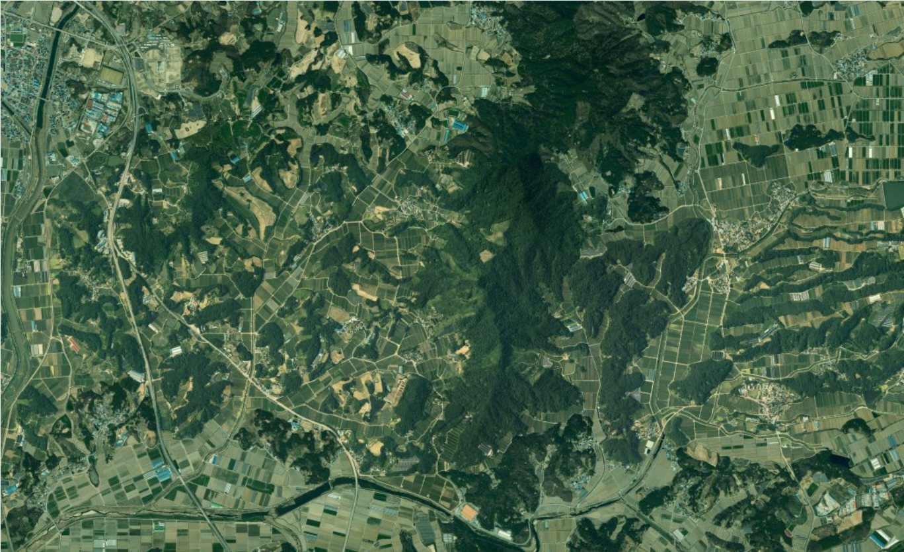

요청하기
영상을 넣어 분석을 맡기거나, 새로 찍어 달라고 요청합니다 — LX 담당이 받습니다분석 요청촬영 요청보낸 요청0
1어디를 찍을까요지도에 범위를 그리거나 읍면을 통째로

범위 그리기지우기
덕과면 일대 · 1.5㎢읍면 전체로운봉읍덕과면보절면산동면더 보기
2언제 · 찍은 뒤 무엇을
원하는 시기
2026년 10월 하순
찍은 뒤 바로 분석선택영농관리 행정서비스
메모선택예: 추수 전에 찍어 주세요
3대략 비용넓이에 비례 · 국토교통부 고시 기준
덕과면 일대 1.5㎢ · 시 지역
대략 21,306,000원
이 금액은 넓이로 계산한 대략의 값입니다. 촬영 시기와 금액은 LX 담당자가 조정해 확정하고(분석 대가 등 포함), 확정 조건을 보낸 요청에서 보고 진행 여부를 정합니다.
촬영 요청 보내기
LX 담당자가 받아 시기 · 금액을 답합니다. 답이 오면 알림으로.
분석 요청은첫째 탭
영상 넣기 → 분석 카드 고르기 → 요청하기(설계 8차 기관-5 ⓐ 그대로). 결과 지도의 '이 영상으로 분석 요청'을 누르면 이 탭이 그 영상 · 서비스가 들어간 채 열립니다.

영농관리
첫 결과 전
생활환경
첫 결과 전
도로 안전관리
보낸 요청0건 · 셋째 탭
- 촬영 요청덕과면 일대 1.5㎢예시LX 답 도착 — 10월 하순 · 확정 금액은 담당자가 조정답 도착
- 분석 요청덕과면 영상 → 영농관리예시LX 확인 중확인 중
- 검토 요청세전리 1395-12 "비닐하우스 아님"예시답 "다음 판에 반영합니다"답 도착
분석 · 촬영 · 검토 요청이 한 목록에 — 지금은 보낸 요청이 없습니다.
전북특별자치도 남원시대표전화 063-620-6114AI 분석 · 모델 개발과 갱신 — LX 한국국토정보공사